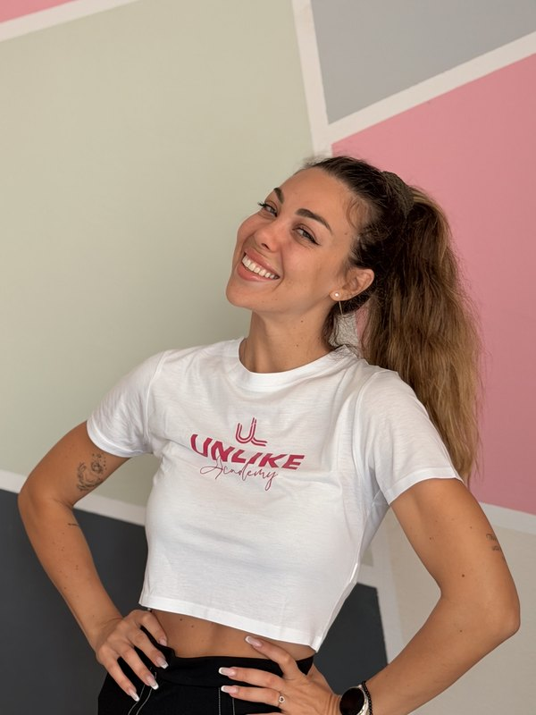
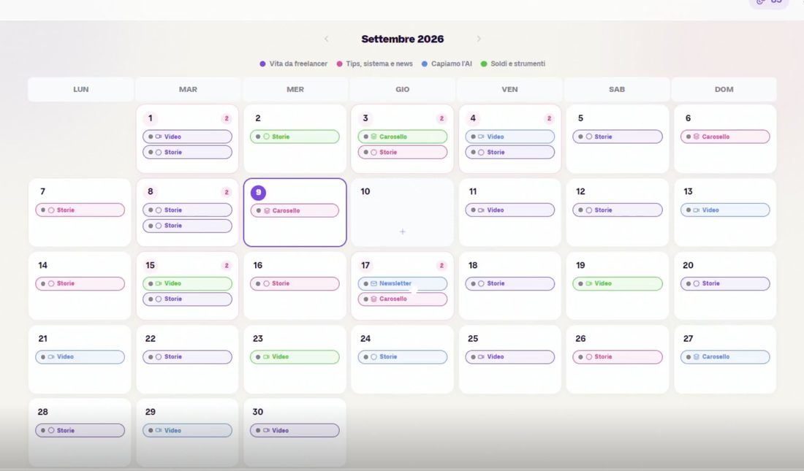
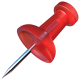
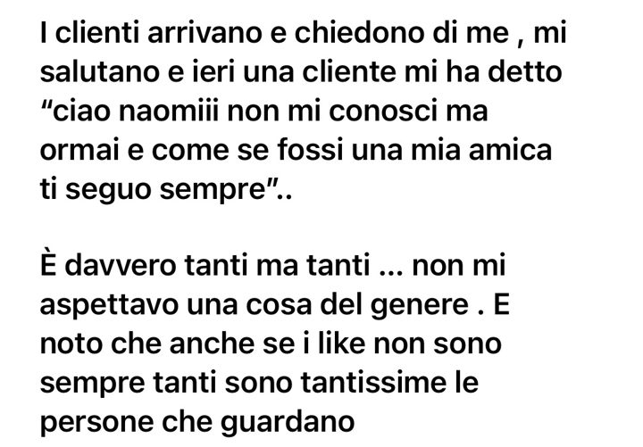
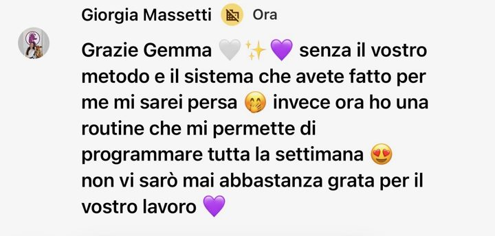
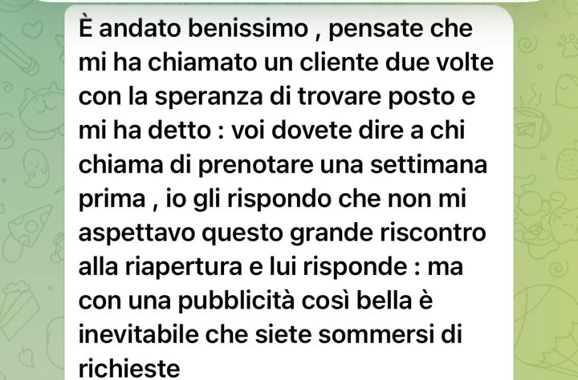

come ti fai scegliere sui social nel 2027
Usi l'AI per fare prima, pubblichi con costanza, eppure ti guardano sempre le stesse persone e i clienti non arrivano
Giovedì 26 novembre alle 19:30 ti spiego cosa è cambiato sui social quest'anno e cosa cambiare da lunedì per farti riconoscere e scegliere nel 2027
Ti mando il link per mail, e se non riesci a esserci ti arriva anche la registrazione
Ti ho appena mandato il link per mail: se non lo vedi, dai un'occhiata anche in Promozioni
Lo metto in calendarioIntanto pensa a una domanda sui tuoi social da farmi giovedì: l'ultima parte della live è tutta per quelle

Sono frasi che ci sentiamo dire ogni settimana nelle call con chi ci contatta, magari una l'hai detta anche tu
Pubblico con costanza, ma mi guardano sempre le solite 30 persone, parenti compresi
Un giorno pubblico una cosa, un giorno un'altra: non ho una linea
Chi ha iniziato ieri con metà delle mie competenze oggi è davanti a me
So farlo benissimo per gli altri, ma per me no
E poi è arrivata l'AI: la usi per fare prima, e piano piano i tuoi post iniziano a somigliare a quelli di tutti gli altri
Se ti ci ritrovi, il problema non sei tu. La competenza ce l'hai, solo che quest'anno farla vedere non basta più: devi farti riconoscere, e giovedì ti spiego come
Fare un contenuto oggi non costa più niente e abbiamo tutti lo stesso assistente, e le piattaforme (e le persone) se ne sono accorte
Da aprile Instagram premia i contenuti originali anche su foto e caroselli: negli Stati Uniti il 75% dei post consigliati è originale
Su LinkedIn i contenuti che sanno di AI ricevono il 40% di visualizzazioni in meno, e c'è perfino un tasto per segnalarli
si fida meno dei brand che usano chiaramente l'AI nel marketing (su 8.000 persone in 8 paesi, Italia compresa)
Il cliente non sceglie chi pubblica di più, sceglie chi riconosce
Cose da applicare da lunedì, con gli esempi del lavoro che facciamo ogni giorno con le persone che seguiamo
giovedì ti porti a casa

Ti lascio i messaggi che ci hanno mandato Naomi e Giorgia, così come sono arrivati





Non è per te se cerchi il prompt magico per diventare virale entro venerdì: non esiste, e te lo dico subito
Ho fondato Unlike, agenzia e academy per chi vuole trovare clienti con i social. Con il mio team abbiamo seguito più di 500 persone tra percorsi, mentoring e corsi, e il mio lavoro è trasformare competenze in clienti, senza inseguire il virale
Uso l'AI tutti i giorni e l'abbiamo messa dentro Stratego, ed è proprio per questo che te lo dico: prima viene chi sei e cosa vendi, poi tutto il resto
Un'ora in diretta con me, ed è gratis ·
Iscriviti alla live Entro nella live Vedo le offerte